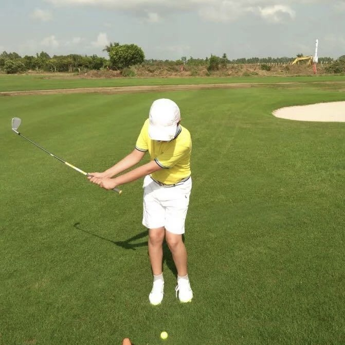

About
My name is Tian Zhuang, English name is Terzo, from Zhuhai City, Guangdong Province. I graduated from Zhuhai No. 2 Middle School and am currently studying in Shaoguan University. My major is computer science and technology. The main direction of study is basic programming languages including C, C++, HTML, Java, etc. Machine learning, operating systems, data structures, big data, etc. Under the guidance of my teachers, I made my own website, edited videos, and participated in the school short video contest. I also participated in the National Computer Game as team captain. I completed my undergraduate course very well with excellent and stable grades. The fourth major of comprehensive quality evaluation of Chinese college students. In college, I served as monitor for three years. I'm a member of the school model team and I like to play golf in my spare time.

Undergraduate in Computer Science and Technology
- Birthday: 20 Mar 2003
- Website: www.tz.com
- Phone: +8615916205559
- City: Zhuhai, Guangdong
- Degree: Bachelor
- E-mail: 1718441196@qq.com
- Hobby: Golf
I like computer and my major very much. I want to study for a master's degree and a doctor's degree, and I want to study artificial intelligence or further study..
Facts
I like to plan my travels alone and have a lot of friends. I have been to USA,Singapore,Malaysia,Japan,Thailand.I love to be a volunteer. I volunteer for 22 hours. I have been playing golf for more than 10 years and have participated in minor golf tournaments. The computer game contest won the national second prize.
Golf Age
Volunteer hours
Travel countries and More...
Skills
During university, I have learned the simple database MySQL imported from WEKA with large data, learned C language, C++, Java, HTML and CSS, simple Python crawler, Qt development framework to realize Gobang man-machine game software, AWS simple experiment, and mastered some knowledge of data structure, computer network, computer composition principle, operating system and so on. Still learning ~
Resume
Possessing advanced IT skills, I effectively leverage programming languages and system administration expertise, while concurrently contributing to academia through impactful teaching roles at the university level.
Summary
Terzo & TIAN ZHUANG
Golf enthusiast with more than 10 years of golf experience, haven on a study tour to the United States in junior high school, and traveled to 28 cities such as Beijing and Shanghai in China and many countries around the world. College students with strong learning ability and enthusiasm for new things.
- Zhuhai,Guangdong Province, P.R.China.
- +86-15916205559
- 1718441196@qq.com
Experience
Coach Tang Jinchang's apprentice
2008 - Present
Cuihu Golf Club, Zhuhai, Guangdong
Domestic top ten golf coach club apprentice, more than 10 years of golf experience, with a certain wealth of experience and golf skills. Participated in the "Huafa Cup" golf commercial competition, won the fourth group, personal best score of 79. I learned early, the coach is highly qualified, and I practice hard. I am an apprentice of the top 10 domestic golf coach clubs with a 290-yard first wooden tee shot. I have more than 10 years of golf experience, so I have certain rich experience and golf skills. Participated in the "Huafa Cup" golf commercial competition, won the fourth group, personal best score of 79.
Study Tour in America
2015
Portola High School, Los Angeles, America
In junior high school, I went on a study tour to Los Angeles high school
In the United States, I learned about a variety of learning models in the world and communicated in
English Skills.
In junior high school, I went on a study tour to Los Angeles high school. During the study tour,
I took part in the courses of the high school class for two weeks. At the end of the study, I won the
excellent student and took a photo with the principal.
Educational Experience
Primary school years
2008 - 2014
No.2 School, Zhuhai, Guangdong.
- Enroll as monitor. The first group of young pioneers was selected. First in class in academic performance.
- Grade three was recommended by the school to participate in the Zhuhai Radio interview program recording.
- Gold medal of Zhuhai Children's Huahui Orchestra Competition, saxophone representative.
- Champion of long jump in the school sports Meeting.
- First prize of Zhuhai hard pen Calligraphy.
- First prize in Zhuhai English Speech and Story Competition.
Middle & High school years
2015 - 2021
JiuZhou middle school & Zhuhai No.2 High School
- Rank high in the entering class and serve as disciplinary commissary.
- Have got 98 points in the chemistry and physics test in junior high school and got excellent results in geography in senior high school. I am an excellent student in the eyes of teachers. I am responsible for class management and love to learn and ask questions.
- As a disciplinary committee member, discipline can serve as an example to drive the class atmosphere.
University years
2021 - Present
SGU
- National College Computer Game Competition C++ gobang.
- Excellent Award of university-level short video Competition.
Portfolio
In my portfolio, I proudly showcase a history of recognized excellence, marked by awards and patents that underscore my commitment to exceptional software design. These accolades and intellectual property rights serve as a testament to my innovative thinking and consistent success patterns in delivering high-quality solutions.
- All
- App
- Card
- Web


{kind=link}
{kind=link}
Stage Capability
Up to now, my abilities and skills have covered many aspects, not only IT but also sports photography, which proves that I am a healthy and balanced student.
Undergraduate graduate
Computer science and technology learners, recent graduates. Have internship experience and computer game experience, master some knowledge base about computer.
Computer Abilities
Can make web pages, including some jump functions and animations, as well as some graphical interface design. Using platform like Qt Anaconda AWS and so on.
Photography
To shoot movies and Photoshop, I will use camera equipment to shoot documentaries, and then use Apple-iMovie or Clip and other editing software for simple editing. For images, Snapseed will be used to edit and beautify the images.
Golf
Familiar with the rules of golf, have a wealth of experience, able to deal with a variety of difficult situations. Competitive experience, good at long strokes and long shots.
Testimonials
Thanks for the letters of recommendation from my teachers, classmates and friends Thank you for your personal evaluation and recognition of my professional knowledge. Because of your recognition, I am encouraged, but also in the pursuit of their own continuous efforts!
Contact
Glad to meet you, I believe you have a certain understanding of me after reading my resume, if you have a deeper interest in me, please contact me in time!
Location:
No. 688, Lovers South Road, Xiangzhou District, Zhuhai City, Guangdong Province, China
Email:
1718441196@qq.com
Call:
+86 15916205559